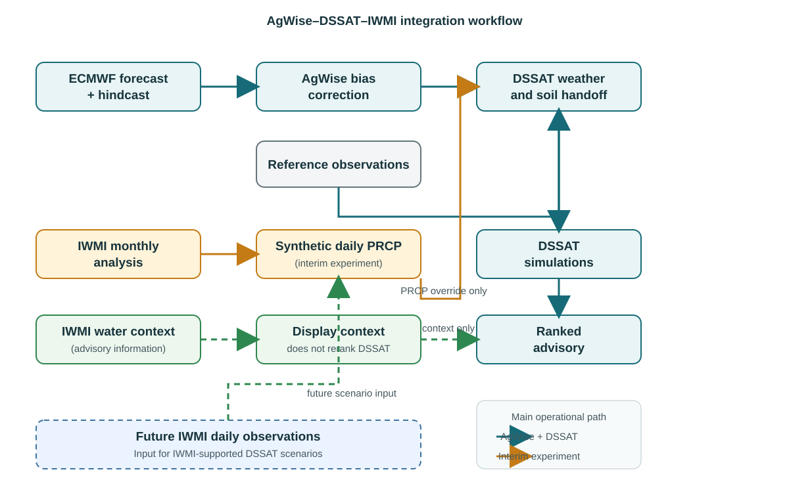

End-of-Internship Report — Detailed Integration Methods
AgWise–DSSAT–IWMI integration for maize advisory development in Chókwè, Mozambique
Project period: 2026
Case study: Chókwè, Mozambique | Maize | 2025/26 season
1. Introduction
This report expands the original end-of-internship report by documenting the methodology and evidence for the three IWMI integration approaches developed during the internship:
- IWMI water-context integration in the advisory layer.
- IWMI rainfall integration: synthetic daily rainfall first proves the workflow, then IWMI daily rainfall is plugged into the same path for accurate values.
- Scenario-based DSSAT integration, using IWMI insights and water context to weight and rank management scenarios.
The normal AgWise–DSSAT workflow remains the foundation. AgWise provides the seasonal forecast, bias correction, and DSSAT weather preparation; DSSAT simulates planting-date and cultivar treatments; the advisory layer ranks and explains the results. IWMI information is added through explicitly labelled interfaces so contextual products are not mistaken for target-season weather inputs.

3. Methodology
3.1 Approach 1 — IWMI water context in the advisory layer
Purpose. Add water-related information without changing the DSSAT simulation or silently altering the recommendation.
Inputs and processing. The IWMI adapter discovers STAC items, records the collection and asset provenance, samples the nearest raster cell when requested, applies scale and offset metadata, and preserves both decoded and raw values. The advisory separates temporal roles:
- Historical rainfall anomaly: contextual reference, not a current-season observation or forecast.
- ET fraction: displayed with the product-definition warning because linked metadata conflict for that collection.
- Irrigation probability: reported as a probability, not a binary irrigated classification.
- Evaporative stress: reported as a unitless index with provisional project bands; these are not an IWMI product legend.
The normalized payload records source URLs, period, temporal role, coordinates, unit, scale, offset, and sampling method. Context values are displayed beside the DSSAT result and do not enter the treatment-ranking function.
3.2 Approach 2 — Preferred IWMI rainfall integration
Purpose. Prove and then operationalize the IWMI rainfall input path in the DSSAT weather workflow. Synthetic daily rainfall first demonstrates that the workflow is executable; once IWMI provides daily rainfall, those observations replace the synthetic series in the same path for accurate values.
The Digital Twins /chatbot/rainfall_analyses export supplied 309 monthly values from 2001-01 through 2026-09. It is not a daily observational dataset: the metadata records daily_observations: false. The existing 2001–2016 values match all 192 overlapping months in the new export.
For each month with target total (M) and (D) days:
- Select the exact target-year
YYYY-MMtotal when available. - Set the number of wet days to (K=(1,(Df))), with (f=0.25) by default.
- Select (K) days reproducibly without replacement.
- Draw event weights (w_i(1.5,1.0)).
- Allocate rainfall using [ R_i=M. ]
Dry days receive zero; the wet-day values sum to the monthly target, subject to output rounding. For 2025/26 the selected totals were 139.50, 140.35, 209.99, and 16.47 mm for November through February, with no climatology fallback. The resulting daily sequence is synthetic and is replicated across DSSAT forecast points. It does not reconstruct observed storm timing, persistence, extremes, spatial variation, or rainfall–temperature dependence.
The synthetic file is passed as IWMI_PRCP_CSV. At the DSSAT handoff, synthetic rainfall replaces AgWise PRCP only on covered dates; AgWise TMAX, TMIN, and SRAD remain in use. The synthetic series is not sent through AgWise bias correction because exact IWMI monthly totals are the workflow-proving target.
3.3 Approach 3 — Scenario-based DSSAT integration
Purpose. Run DSSAT under explicit management scenarios and use IWMI insights, water context, and data products to weight and rank those scenarios. This is distinct from Approach 2, which verifies the rainfall input path.
The recommended sequence is:
- Define valid rainfed, supplemental-irrigation, and irrigated DSSAT management variants.
- Collect IWMI STAC/API evidence, including rainfall context, ET, irrigation probability, evaporative stress, and water access.
- Weight scenarios using feasibility, cost, risk, and yield criteria.
- Rank the scenarios and expose the preferred and conditional alternatives in the advisory.
- Repeat multi-season DSSAT and advisory comparisons before operational use.
Approach 2 is the preferred integration direction. Approach 3 is a separate future decision-support extension that can use the completed Approach 2 rainfall workflow while broader IWMI water context helps determine which management scenario is feasible and preferred.
4. Results by integration approach
| Approach | What was measured | Result | Readiness |
|---|---|---|---|
| 1. Advisory context | Availability, provenance, units, periods, and display of four IWMI layers | Rainfall anomaly -12.91%; ET fraction 0.60%; irrigation probability 0.036; stress index 0.50; no DSSAT reranking | Implemented as qualified context |
| 2. IWMI rainfall integration | Matched DSSAT treatment summary using 13 cells | Recommendation remained 30 Nov 2025, Short; median yield changed 2,996 → 2,973 kg/ha (-23 kg/ha; -0.77%) | Synthetic-data workflow proof complete; daily-data stage pending |
| 3. Scenario-based DSSAT integration | Weighted and ranked management scenarios using IWMI water evidence | Scenario-ranking results pending full scenario execution and validated inputs | Separate future extension |
4.1 Approach 1 result
The advisory successfully carried contextual IWMI values with source, sampling, temporal-role, and limitation metadata. The historical rainfall anomaly was not interpreted as a 2025/26 forecast. The context was therefore useful for interpretation, but it did not alter the DSSAT ranking.
4.2 Approach 2 result
The controlled 13-cell comparison produced:
| Metric | AgWise PRCP baseline | IWMI synthetic PRCP | Difference |
|---|---|---|---|
| Recommended date | 30 Nov 2025 | 30 Nov 2025 | Unchanged |
| Cultivar | Short | Short | Unchanged |
| Median HWAH | 2,996 kg/ha | 2,973 kg/ha | -23 (-0.77%) |
| Number of simulations | 13 | 13 | Matched |
The original broad 62-cell run reported 2,976 kg/ha and a 2,025–3,132 kg/ha spatial P10–P90 range. The current 13-cell run reported 2,973 kg/ha and a 2,895–3,065 kg/ha range. These broad and localized results are not a rainfall-only comparison because their spatial populations differ.
4.3 Approach 3 result status
There is no fully executed scenario-ranking result yet. The rainfall input workflow has been proven with synthetic data; IWMI daily rainfall will later replace that input without changing the DSSAT scenario interface or advisory contract. The remaining work is to execute and validate the weighted scenario ranking.
5. Conclusions and handover
All three integration surfaces are now defined. Approach 1 demonstrates safe contextual advisory enrichment. Approach 2 proves the IWMI rainfall input path with synthetic data and will later use IWMI daily rainfall. Approach 3 is the separate scenario-based DSSAT layer that weights and ranks management alternatives using IWMI insights and water context.
The interim synthetic result is encouraging because the recommendation was stable, but it is not evidence that synthetic rainfall is equivalent to daily observations. The next milestone is to obtain and validate IWMI daily data, resolve the returned station-identifier mismatch, replace the temporary synthetic scenario input, and repeat the comparison over multiple seasons using identical DSSAT cells and inputs.